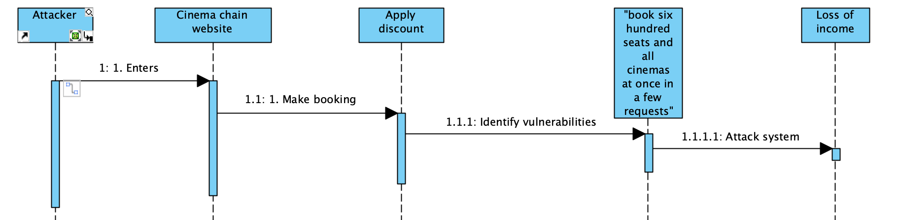

Features
UML Flowchart
Insecure Design
"The Open Web Application Security Project® (OWASP) is a nonprofit foundation that works to improve the security of software" (OWASP, 2022). OWASP provides a space for developers and engineers to make sure their software is secure on the web. Insecure design is identified as a coding weakness by OWASP.
learn more
Insecure design relates to the risks associated with architectural and design defects. It is important to note that these flaws occur before code implementation and we need to distinguish between design and implementation weaknesses.
Thus, security design holds as much value as security in code implementation. Overall, a system needs to be designed to defend itself against attacks. For instance, this can be done through threat modelling. Threat modelling involves analysing design flows and ensuring all failure reasons are understood and catered for.
According to OWASP, these attacks can be prevented by implementing the following:
1. Establish and use a secure development lifecycle with AppSec professionals to help evaluate and design security and privacy-related controls
2. Establish and use a library of secure design patterns or paved road ready to use components
3. Use threat modeling for critical authentication, access control, business logic, and key flows
4.Integrate security language and controls into user stories
5. Integrate plausibility checks at each tier of your application (from frontend to backend)
6. Write unit and integration tests to validate that all critical flows are resistant to the threat model. Compile use-cases and misuse-cases for each tier of your application.
7. Segregate tier layers on the system and network layers depending on the exposure and protection needs
8. Segregate tenants robustly by design throughout all tiers
9. Limit resource consumption by user or service

References
1. OWASP (2022). Who is the OWASP® Foundation?. OWASP. Available from: https://owasp.org/
2. OWASP Top 10:2021. (2022) A04:2021 – Insecure Design. OWASP. Available from: https://owasp.org/Top10/A04_2021-Insecure_Design/
Blog Post
"Select five terms from ISO/IEC Standard 27000 Section 3 Terms and Definitions and write a 300-word blog post on how people can be managed to overcome cyber security attacks from the inside."
learn more
Technical advancements and an increased use of internet activity have resulted in countless cyber-attacks. Human error and behavior are seen as a predominant risk in cyber security. Nevertheless, individuals and business's have implemented security measures to protect themselves from vulnerabilities.
There are many common cyber security threats that can be eliminated based on human intervention, such as:
1. Access control:
Access control involves monitoring who has access to certain systems and information within a business. This allows a business to monitor who is permitted or limited to gaining access to certain information. This could prevent an unsuspecting individual from viewing private data.
2. Audit:
An audit is a report on how your company is complying with rules and regulations. An audit can be conducted by either an internal or external party. An audit is important to report and identify suspicious activity.
3. Authentication:
Authentication involves validating an individual’s credentials. This allows you to monitor who gains access to a system based on password and username identification. An entity can either be verified or unverified based on security measures.
4. Competence:
Competence ensures that employees or individuals who have access to a particular system are knowledgeable and have the necessary skills to fulfill their role. Competent employees are less likely to make mistakes and avoid human error that could potentially create security risks for a business. Furthermore, adequate training could also be supplied to prevent such attacks.
5. Consequences
A cyber-attack should have negative consequences, which will deter attackers. Both employers and attackers should be held responsible for security breaches. Thus, it is highly important that employers are aware of company policies and security risks.
References
1. ISO (2022). Information technology — Security techniques — Information security management systems — Overview and vocabulary. ISO. Available from: https://www.iso.org/obp/ui/#iso:std:iso-iec:27000:ed-5:v1:en
▲Codio Activities
Buffer Overflow with C
learn more


The above output message shows that their is a buffer overflow which has been detected. This is because the input, "VictoriaEssex" exceeds buffer capacity.
The following C code cannot be compiled successfully because a name was entered that exceeds 10 or more characters.
Buffer Overflow in Python


The following excercise involved running the above code and detecting errors. We were then encouraged to install and make use of pylint. Pylint acts as a guide and reveals what is actually going on with your code, this can result in improved code awareness. The use of pylint also confirms that you are conforming to python standards.
Testing in Python
Particular python programs, known as Linters (metricTest.py ,pylintTest.py ,styleLint.py ,sums.py ,sums2.pyare) are used to test, inspect and provide feedback for your python code. Attached below are some examples.
Code Source.Once the above code is run, it produces the following output and detects errors.

▲
Programming language concepts
What is ReDOS and what part do ‘Evil Regex’ play?
ReDos stands for 'Regular Expression Denial of Service.' This "is a Denial of Service attack, that exploits the fact that most Regular Expression implementations may reach extreme situations that cause them to work very slowly (exponentially related to input size). An attacker can then cause a program using a Regular Expression (Regex) to enter these extreme situations and then hang for a very long time" (Weidman, 2022).
learn more
What are the common problems associated with the use of regex? How can these be mitigated?
The use of regular expressions allows coding to be easier but is also prone to error. In order to avoid making mistakes, a developer can make use of ACRE, Automatic Checking of Regular Expressions (larson, 2018). This is a great debugger that can be used to scan your code and highlight errors.
How and why could regex be used as part of a security solution?
Regular expressions used in python allow for efficiency and fast solutions. This is because tasks can be automated and you can search for content in code and identify it easily based on common expressions.
▲What is an Ontology?
In computer science ontology refers to a data model that is constructed of a set of ‘concepts within a domain and the interactions between those concepts.’
Development Team Project: Design Document
"For this assessment, you are advised to position yourself and your team as IT Software Consultants and Developers. You are required to develop an application that provides a secure repository for an organisation with domain-specific requirements."
View and download document.
Development Team Project: Coding Output
A practical development of your design document
View github repository.
Module Reflection
Secure software development plays an essential role in the constantly advancing technological age that we live in. Secure software development highlights the importance of implementing security measures in both the design and development process. Building secure systems that have good quality source code ensure not only the success but the safety of an application.
During the course of the module:
learn more
1. We learnt about the differences between agile and waterfall approaches to software development. In my current job, we work in an agile method, breaking up our work and committing to two-week sprints. From personal experience, I find agile to be a more effective and structured way of working, as opposed to adopting a waterfall approach, where the project is developed as a whole, and testing is only done once completed.
2. We were encouraged to create UML diagrams. I particularly enjoy UML and find it a useful way to visually display how a system works and how different components/classes engage with one another. UML is a great way to monitor, detect errors and maintain a system.
3. Human intervention plays a major role in influencing the security of an application. Implementing security measures against cyber-attacks such as access control are vital when building an application.
4. Whilst completing Codio exercises, I was introduced to buffer overflow. “Buffer overflow is a software coding error or vulnerability that can be exploited by hackers to gain unauthorized access to corporate systems. It is one of the best-known software security vulnerabilities yet remains fairly common” (Fortinet, 2022). This was evident, during one of the exercises where an input exceeded buffer capacity. This is because there is not enough data capacity available in that particular location. Furthermore, it is important to make use of Linters when testing python code to help detect code flaws.
5. We investigated the positives and negatives of making use of Regex. Regular expressions are used in python to help write code and identify pieces of code using search functionality by inputting a string. Nevertheless, the use of regular expressions can allow for human error.
6. Our team project consisted of creating a design proposal and code implementation to develop an application based on CERN (European Organization for Nuclear Research). As a team, I believe we were able to successfully create an application in accordance to our design proposal. Even though some of my personal contributions did not end up in the final submission, I was able to create a web-interface using angular.